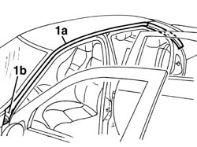
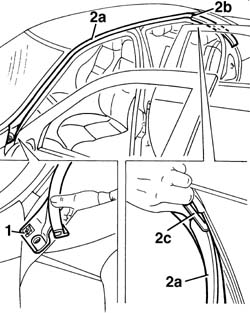
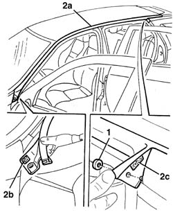

7055A16 roof and door frame finish strip - r r
- Path
- Procedures > 70 FITTINGS > 7055 MOULDING AND PROTECTION > 7055A exterior mouldings > 7055A16 roof and door frame finish strip - r r
- Kind
- repair procedure (removal / refitting; the operation number is the code)
- Applies to
- all engines; all production periods
- Interactive page
- https://sloeber94.github.io/elrnDB-a156/en/#/3238946
Applies to: all engines; all production periods; only with equipment: Sedan
 Removing
Removing
 Refitting
Refitting1. Prise the seal (1a) from its seating. Begin from the front end (1b).

Applies to: all engines; all production periods; only with equipment: Sedan
Refitting
RemovingCheck that the seal is undamaged.
1. Clean and degrease with hepane the area of the bodywork where the adhesive will be glued.
2. Fit the seal (2a) in its seating. Use upper rear corner (2b) as a position reference.

Applies to: all engines; all production periods; only with equipment: Station Wagon
Removing
Refitting1. Remove the retainer.
2. Prise off the seal (2a) from its seating, after removing the adhesives (2b) and (2c).

Applies to: all engines; all production periods; only with equipment: Station Wagon
Refitting
RemovingCheck that the seal is undamaged.
Clean and degrease with heptane the area of the bodywork where the adhesives will be glued.
Fit the seal in its seating and stick the adhesives.
Fit the retainer.